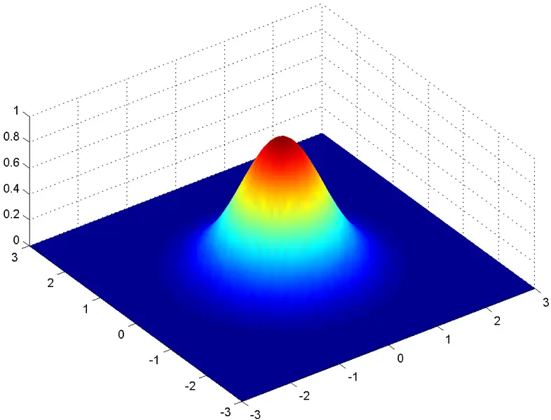

// FORMACIÓN Y DESARROLLO
Desvío 7,7%
Los objetivos se ponen para para medir la diferencia respecto a una referencia. Nunca se cumplen, ya sea por exceso o defecto.
31 de marzo de 2014 · 1 minuto de lectura

Para eso se crearon distintas formas de medirlo y cuantificarlo, con el objeto de tener una visión del objetivo más acorde con la realidad al momento de describir e interpretarlos para la toma de las siguientes decisiones.
De esta forma, se utilizan varias vías de acercamiento al proceso de pensamiento y resolución del problema o la causa por la cual no se llegó o se sobrepasó el objetivo. La materia a tratar se visualiza desde una variedad de ángulos, sirviendo esto a los intereses de todos los puntos de vista que se pueden tener.
Es momento de cambiar los sombrero, poner nuevos objetivos y volver a medirlos dentro de un tiempo.
Estudios relacionados

MPU6050 | Sparkfun
Combina un giroscopio y un acelerómetro en la misma pastilla de silicio junto con un procesador digital de movimiento.
Diciembre 2013
RPIC 2013 Plataforma Inteligente
tuvimos al agrado de poder presentar el trabajo con el que venimos trabajando en estos últimos años, junto al equipo de GIAR.
Octubre 2013
Avance 2,45%
El que aprende y aprende y no practica lo que sabe, es como el que ara y ara y no siembra.
Agosto 2012MPU6050 | Sparkfun
// EL SIGUIENTE PASO
TU PRODUCTO.
SU PRÓXIMA ETAPA.
Una primera conversación para entender el desafío y ver si puedo aportar valor.
↗ Hablemos de tu proyecto